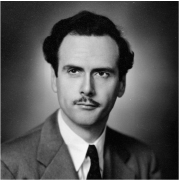

This site requires audio. Click anywhere to begin.
athletic aesthetics
brad troemel
Visual artists, poets, and musicians are releasing free content online faster than ever before. There is an athleticism to these aesthetic outpourings, with artists taking on the creative act as a way of exercising other muscle groups, bodybuilding a personal brand or self-mythology, a concept or a formal vocabulary. Images, music, and words become drips in a pool of art sweat, puddling online for all to view. The long-derided notion of the “masterpiece” has reached its logical antithesis with the aesthlete a cultural producer who trumps craft and contemplative brooding with immediacy and rapid production.
Athletic aesthetics are a by-product of art’s new mediated environment, wherein creators must compete for attention in the midst of an overwhelming amount of information. Artists using social media have transformed the notion of a “work” from a series of isolated projects to a constant broadcast of one’s artistic identity as a
recognizable, unique brand:
"That is, what the artist once accomplished by making commodities that could stand independently from them is now accomplished through their ongoing self-commodification. This has reversed the traditional recipe that you need to create art to have an audience. Today’s artist on the Internet needs an audience to create art. An aesthlete’s audience, once assembled, becomes part of their medium."
Posting work to the Internet without a network of viewers in place raises the same questions as the proverbial tree falling in an empty forest. If a Tumblr post has no notes, is it art? Does it exist? For young artists using social media, the answer is no. If an audience for their work isn’t maintained, it loses the context necessary for regarding it as art. Facing dim employment prospects and precarious conditions (not to mention massive debt from higher education), such practitioners aggressively seek to exercise clout in the online attention economy through over production.
Just as conditions have changed for artists, they have also changed for audiences. The refresh rate of information in social media alters viewing habits. When looking at a screen, we don’t fixate on a single status update, image, website, or work for long. Part of this is because the interfaces militate against it: 140 characters is a light reading load. In the cases of Tumblr and Facebook, the information piling up in a newsfeed flows past viewers almost automatically into a virtually bottomless well
But attention spans are also constrained because each bid for our attention on social media can prompt an endless hunt for a more complete understanding of its context. An endless cascade of tabs can arise from a simple friend request, far beyond “Who is this person, anyway?” Little can be meaningfully understood about any given person based on an isolated Tweet or profile picture.
Mutual friends need to be investigated, personal website links in the About Me section need to be opened, geotagged restaurants need to be Googled and their menus canvassed for the kinds of ingredients favoured. And to get satisfactory context for the work of a single person, viewers may have to go through all of that person’s online folders, scrolling all the way back to when they first joined whatever service they’re using. Caring too much about any one item to the exclusion of the others readily available now seems to jeopardize the viewer’s ability to understand the whole.
Even if you don’t go on winding quests for context and allow information to passively wash over you through your feed, you ultimately arrive at the same place: recognizing patterns amid flow rather than shutting the floodgates. As Marshall McLuhan claimed in
the medium is the message:

"Our electrically-configured world has forced us to move from the habit of data classification to the mode of pattern recognition. We can no longer build serially, block-by-block, step-by-step, because instant communication ensures that all factors of the environment and of experience coexist in a state of active interplay."
The idea of memorizing art-history slides to demonstrate a mastery of the canon now seems like a quaint reminder of a time when individual works somehow meant more than the always fluid relationships between them. Audiences no longer have the luxury of imagining that there is a static regime of aesthetic stability dictating quality and meaning. Passive viewers, who consume at the same pace as those they follow produce, and context hunters, who compress that process in time, end up with the same hermeneutic, finding meaning in the lines drawn from one bit of information to the next.
To maintain the aerial view necessary for patterns to emerge, one must cultivate a disposition of indifference. To be indifferent is to believe that any one thing is as important as any other. Social media anticipate and reinforce this attitude, presenting, say, news from Afghanistan and a former high school friend’s lunch in the same format, with the same gravity.
Athletic aesthetics inverts this indifferent disposition, using it to produce as well as view content. Instead of creating a few, thoroughly worked pieces, the aesthlete produces a in viewers’ newsfeeds, or else become the wave itself, overwhelming them with material. The tacit agreement between the aesthlete and the viewer is to be mutually indifferent toward quality understood as slick production value or refined craft. For aesthletes, the point of their work is not only what it expresses but the speed at which it’s expressed. The ideal presentation of their work is the constant broadcast.